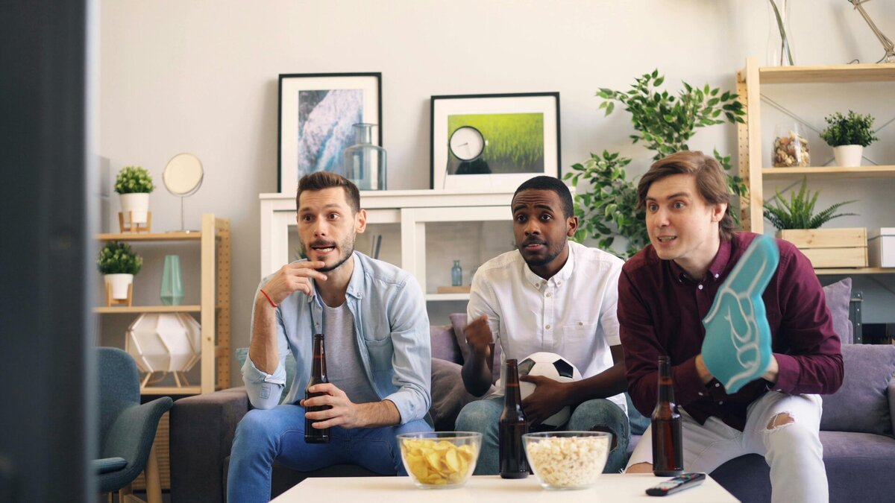

Travel & Viewing Guide
Road To The Final
PSG emerged from a competitive group stage and demonstrated their maturity in the knockouts. Wins over Liverpool, Aston Villa, and Arsenal showcased not only their technical quality but also tactical growth. Luis Enrique's side is fast, aggresive, and cohesive - a dramatic shift from their past reliance on individul brilliance.
Inter Milan's campaign has been defined by consistency and resilience. They topped their group and edged past tough opponents in the knockout stages. Their 7-6 aggregate win over Barcelona in the semifinals was one of the dramatic encounters in Champions League history.
Key Players to Watch
PSG's Ousmane Dembele has been in career best form, contributing goals and assits at crucial moments. Donnarumma brings calm and experience in goal, while January signing Khvicha Kvaratskhelia has added fresh energy and creativity.
Inter's Lautaro Martinez leads ther frontline with deadly precision. Hakan Calhanoglu controls the temo in midfield, and Henrikh Mkhitaryan offers leadership and the rare chance to complete a peersonal treble of all major European titles.

Match Details
Kickoff is at 21:00 CET on May 31, 2025. The match will be officiated by a top UEFA selected referee crew ad includes VAR support. Global fans should adjust their viewing times based on their location. A live countdown clock will be featured on the homepage.
Broadcast & Streaming
Fans can catch the match on CBS/Paramount+ (USA), BT Sport (UK), Canal+ (France), and Sky Sports (Italy). For streaming, official UEFA digital platforms will also provide access depeding on regional rights.
